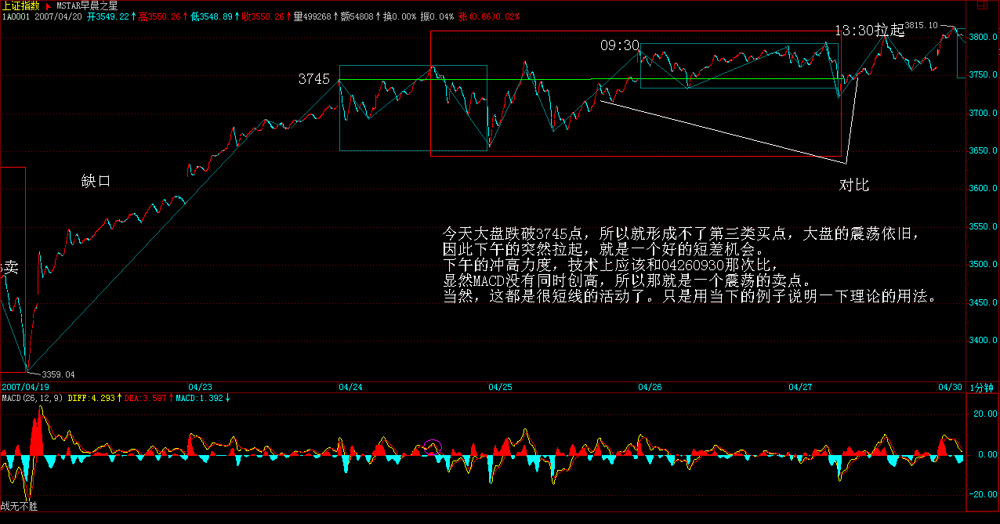
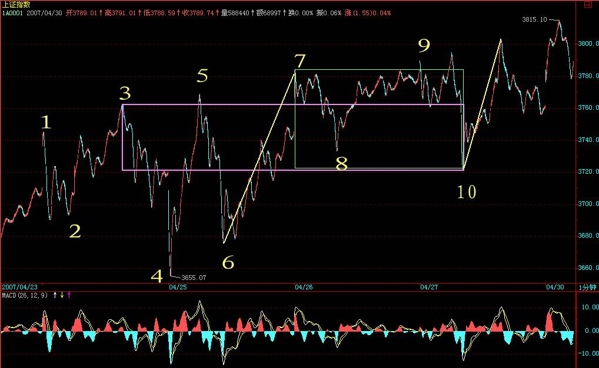
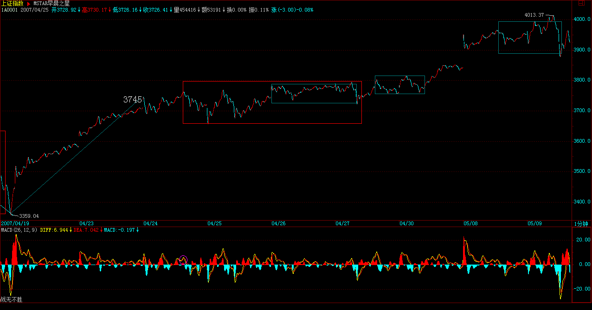

|
 |
教你炒股票50：操作中的一些细节问题
(2007-04-27 08:42:51)
51前都说股票了，51后再恢复正常，继续解〈论语〉还有诸如419、体液之类的东西。今天说点实际的问题，因为，什么理论，最终都要落实到操作。而操作中一些细节问题，是必须要搞清楚的。
首先，你无论如何都应该能看到走势图，至于最小只能看到1分钟还是分笔图，甚至连5分钟都看不到，这问题都不是太大。其次，只要是正常的软件，没有不能看MACD的，有一个很重要的问题，很多人搞不清楚，就是怎么选择看几分钟的MACD。
必须明白一个道理，就是MACD的计算方法决定了，1分钟和30分钟MACD之间并没有实质的区别，只是计算的周期不同而已，而相应的计算是线性的，只是稍微灵敏与迟钝的区别，没有太大的区别。问题的关键是，MACD只是力度比较的辅助，因此，是先定好比较哪两段走势，然后才去选择看是1分钟的还是30分钟的更适宜辅助判断（关系到灵敏度），例如，两段走势，在1分钟上形成很复杂的MACD柱子和黄白线变化，而在30分钟上是很明显的两个柱子面积以及标准的黄白线变化，那当然就选择用30分钟看。虽然由于MACD与K线价格相关，所以一般情况下，30分钟级别的走势变化，经常对应在30分钟的MACD上，但这不能因此而改变先根据中枢与走势运动的分析，然后选出需要比较力度的走势段，最后才用MACD辅助判断的顺序原则。
以上是些小的技术细节，但更重要的，是一些操作心理上的细节。操作上，最开始，一定都是患得患失的。
为什么一定要把理论搞清楚？就是先从根子上解开自己的疑惑，知道为什么本ID的理论是如几何般严格精确的，否则，例如你对平面三角形内角之和为180度的证明有疑惑，一定要去丈量每一个平面三角形去证明才舒服，这样，就永远有心理阴影，是无法去进行正常操作的。
理论的探讨，是为了树立操作的信心，当然，还为了对走势有一个精确的分析去指导操作，但其心理层面的意义也是极为重要的。这绝对不能迷信，因为相信本ID而相信本ID的理论，那就是绝对的脑子进水了。而是要从道理、逻辑等方法彻底搞清楚，这样才能无疑地去操作，而不用瞻前顾后。
对本ID理论对走势分析以及操作的绝对性有把握后，以后解决的都是一个操作精确度的问题。一个正确的理论，应用到实践中，特别是面对瞬息万变的市场，因为应用的人的经验与心理状态，其结果自然有很大差异。如何提高操作的精确度，就是一个长期实践的问题。但无论如何，只有在操作中才能解决这个问题，否则永远都在纸上谈论，那是毫无意义的。
一个最常见的心理就是，看到是买点或卖点了，但买了还跌、卖了还涨，所以下次就不敢尝试了。这在操作不熟练的人中，太正常了。
因为，对买卖点的判断，开始时，一定都达不到理论所确立的精确度。毕竟是人，人总有盲点与惯性。例如对于习惯性多头来说，经常就是买早卖晚；而习惯性空头，就是买晚卖早。就算对理论在认识上没问题了，这种习惯性因数也会导致真正的操作与理论所要求的操作时间有偏差。要改变这种习惯性力量，不可能是一天两天的事情。
一般来说，应用理论开始实际操作前，要先看懂所有曾有的走势，能用理论对已有的走势进行分析，如果这都达不到，那当下去操作一定乱。这一步基础达到后，可以先不用真正买卖，可以进行一定的模拟，市场一周5天开着，当下去模拟操作，每次的操作都记录下来，然后不断根据后面的走势来总结，然后发现自己对理论当下理解上的问题，不断修正。当模拟操作有足够把握后，才开始真正的买卖操作。如果一开始就真正买卖，由于绝大多数人，在真的钱上都会方寸大乱，无论操作成功、失败，都会迷失上输赢上，而忽略了操作上的问题。
所以，首先要把静态的、已有的图形分析清楚，然后在进行动态的、当下的分析把握，最后才是实际的操作，这样就比较稳妥了。当然，这过程不是一两天完成的，所以，本ID在12月下旬开始就说了些股票，当时是让各位学习时，能安心，买了就扔那里，边赚钱边学习，本ID不需要各位的学费，但各位实际操作的时候，可能会交给市场一些学费，本ID告诉点股票让各位拿着，就是把可能要交给市场的学费都给各位准备好了，因为，毕竟最后都要靠各位自己，而在市场上学习，先教点学费，然后不断进步，最后应用自如，都是很正常的过程。
所以心态要平稳点，不要整天去计算今天少挣多少诸如此类的问题，说白了，如果你没有一套有效的方法，只要你在市场里，你赚的钱从本质上就不是你的，只是暂时存在你那里。而要把自己培养成一个赚钱机器，就如同前锋把自己培养成射门机器一样，方法学了都会，但神射手却不一定都是，这需要更多的努力。市场的技术，是需要磨练的。关键是真正掌握技术，只要掌握了，赚钱就成了自然的事情，只要有足够的时间，就自然产生足够的钱，为什么？因为这已经被本ID的理论如几何般严密地保证了。
另外，学本ID的理论，并不荒废任何其他的东西，但那些东西都只能是辅助，甚至，你可以去听消息，去追炒概念，怎么都可以，但必须不能违反本ID的理论。为什么？因为本ID的理论是这市场真实的直接反映，违反本ID的理论，最终都会被市场教训。如果不相信，那你就在本ID理论的第一买点卖，第一卖点买，来回坚持，如果按一个较大级别去操作，一般来说，N次以后你就可以离开市场了。有了本ID的理论，就算去跟风，追炒，都会有章法，都会进退自如。
每日解盘(2007-04-27 15:14:36)
今天大盘跌破3745点，所以就形成不了第三类买点，大盘的震荡依旧，因此下午的突然拉起，就是一个好的短差机会。下午的冲高力度，技术上应该和04260930那次比，显然MACD没有同时创高，所以那就是一个震荡的卖点。当然，这都是很短线的活动了。只是用当下的例子说明一下理论的用法。


每日解盘(2007-05-08 15:28:53)
今天的走势，用脚趾都能预测到，但依然无须预测。而实际出现的走势，却并不想所表现的那么强，因为大盘只是出现一个强的平衡市，这种留下大的缺口后的放量平衡市，意味着，今后几天，下面的缺口都是大盘短线一个挥之不去的心病，大盘震荡难以避免。

大盘：
2007-04-27
16:17:10 [举报]
[匿名] 擎天 例如一个30分钟中枢形成后，一个包含两个以上中枢的5分钟上涨趋势离开，然后以一个只有一个5分钟中枢的5分钟盘整走势返回不跌破30分钟中枢高点，那就是博主说的通过趋势+盘整来结束或者破获中枢的情况。
缠中说禅：
2007-04-30
08:38:59
看图操作，不要先入为主。
本来，本ID早上不想多说的，后来还是八卦一下，让大家别先入为主，以为有什么大幅低开。想想周五那些跑消息的人，为什么让他们能回补？
缠中说禅：
2007-05-07
12:44:18 [举报]
各位好，明天又要股票，有很多事情需要处理，先下了。 缠中说禅：
2007-05-08
15:36:35
两只老虎
缠中说禅：
2007-05-08
15:47:23
[匿名] 木匠 缠中说禅：
2007-05-08
15:49:34
两只老虎
缠中说禅：
2007-05-08
15:53:30
[匿名] 过客
缠中说禅：
2007-05-08
16:09:57
[匿名] 袖手旁观
2007-05-08 15:59:30
缠中说禅：
2007-05-08
16:13:15
[匿名] 微 缠中说禅：
2007-05-08
16:14:25
[匿名] 职业潜水员
缠中说禅：
2007-05-08
16:16:11
思朴
缠中说禅：
2007-05-08
16:23:41
[匿名] 万年青 五一长假，用了三天时间看缠Md文章，从最后开始，细细看，未拉缠M的一条发言，还有最前面的5页未看完，虽然朦朦胧胧不是全懂，但也有所了解，新手上路，请多关照。请问缠M000997今天5分钟级别背驰，我走了部分，第一次使用缠M的理论付之行动，不知是否正确？请缠M指导为盼。
缠中说禅：
2007-05-08
16:29:02
果二
缠中说禅：
2007-05-08
16:33:44
[匿名] 袖手旁观 ==
缠中说禅：
2007-05-08
16:36:13
两只老虎
缠中说禅：
2007-05-08
16:47:15
匿名] 新浪网友
缠中说禅：
2007-05-08
16:49:11
两只老虎
缠中说禅：
2007-05-08
16:53:11
[匿名] 新学 缠中说禅：
2007-05-08
16:55:09
[匿名] 新浪网友
缠中说禅：
2007-05-08
17:02:17
[匿名] 秋风秋雨 == |
|
|
|